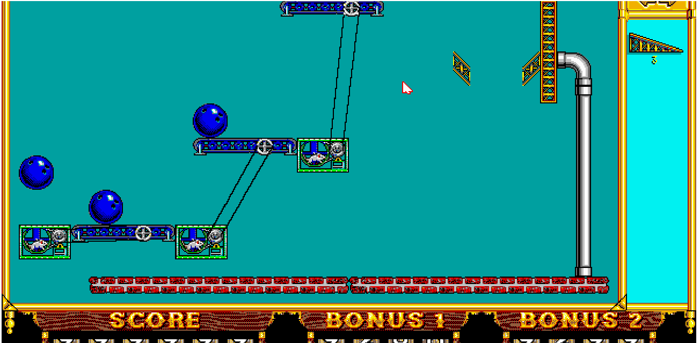

Student engagement is widely recognised as an important influence on achievement and learning in higher education and as such is being widely theorised and researched. This article firstly reviews and critiques the four dominant research perspectives on student engagement: the behavioural perspective, which foregrounds student behaviour and institutional practice; the psychological perspective, which clearly defines engagement as an individual psycho-social process; the socio-cultural perspective, which highlights the critical role of the socio-political context; and, finally, the holistic perspective, which takes a broader view of engagement. Key problems are identified, in particular poor definitions and a lack of distinction between the state of engagement, factors that influence student engagement, and the immediate and longer term consequences of engagement. The second part of the article presents a conceptual framework that overcomes these problems, incorporating valuable elements from each of the perspectives, to enable a better shared understanding of student engagement to frame future research and improve student outcomes. Every effort has been made in the preparation of this book to ensure the accuracy of the information presented. However, the information contained in this book is sold without warranty, either express or implied. Neither the authors, nor Packt Publishing or its dealers and distributors, will be held liable for any damages caused or alleged to have been caused directly or indirectly by this book. Packt Publishing has endeavored to provide trademark information about all of the companies and products mentioned in this book by the appropriate use of capitals. However, Packt Publishing cannot guarantee the accuracy of this information. The Hofburg Palace is the former principal imperial palace of the Habsburg dynasty. Located in the center of Vienna, it was built in the 13th century and expanded several times. Empress Maria Theresa had a 17th-century opera house converted into the dance and concert halls now known as the Redoutensäle, forming the Redoute Wing. This 1763 oil painting by Martin van Meytens depicts the hall on the occasion of the wedding supper of Princess Isabella of Parma and Joseph II, Holy Roman Emperor, who were married on 5 October 1760. The English Wikipedia was the first Wikipedia edition and has remained the largest. It has pioneered many ideas as conventions, policies or features which were later adopted by Wikipedia editions in some of the other languages. These ideas include "featured articles",[7] the neutral-point-of-view policy,[8] navigation templates,[9] the sorting of short "stub" articles into sub-categories,[10] dispute resolution mechanisms such as mediation and arbitration,[11] and weekly collaborations.[12]
